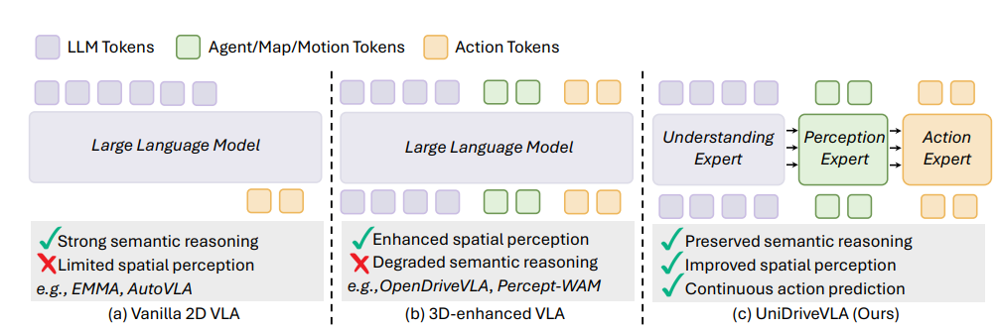
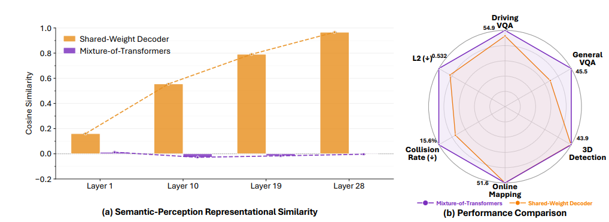
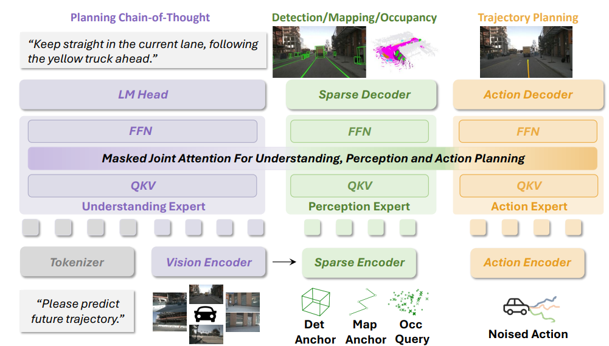
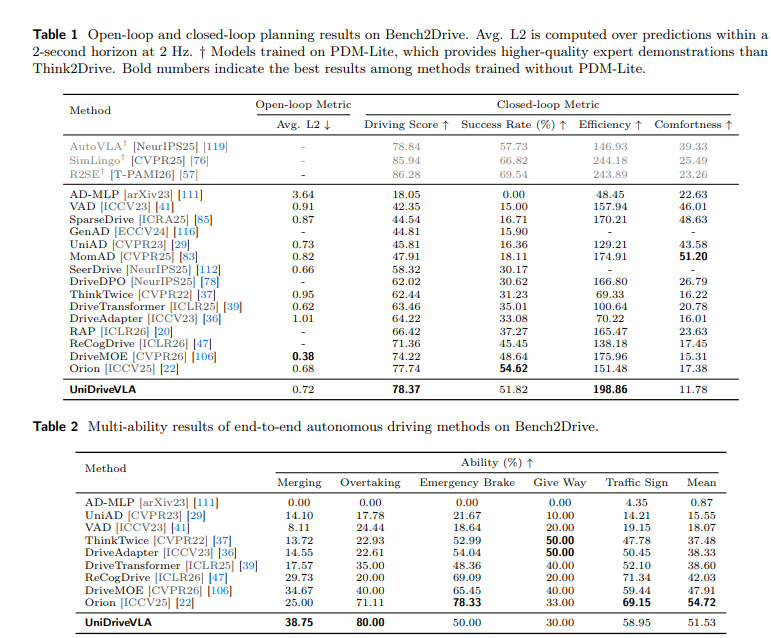
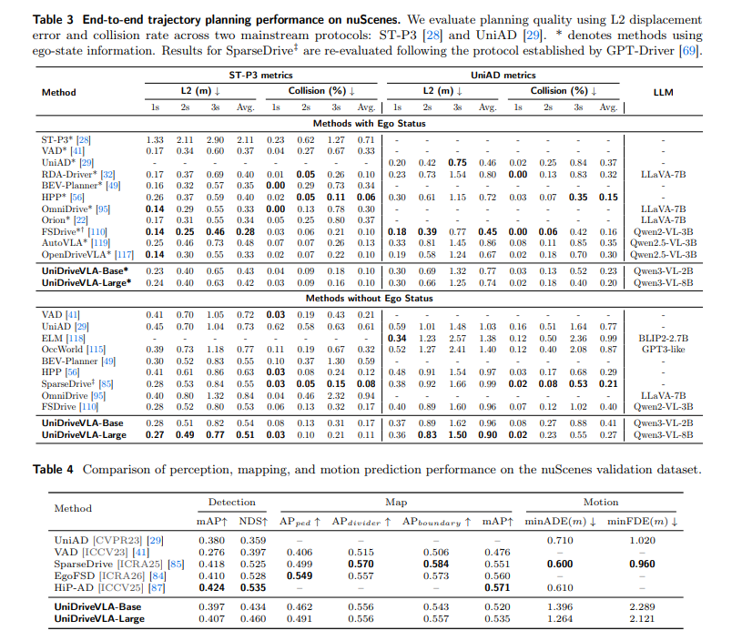

Vision-Language-Action (VLA) models have recently emerged in autonomous driving, with the promise of leveraging rich world knowledge to improve the cognitive capabilities of driving systems. However, adapting such models for driving tasks currently faces a critical dilemma between spatial perception and semantic reasoning. Consequently, existing VLA systems are forced into suboptimal compromises: directly adopting 2D Vision-Language Models yields limited spatial perception, whereas enhancing them with 3D spatial representations often impairs the native reasoning capacity of VLMs. We argue that this dilemma largely stems from the coupled optimization of spatial perception and semantic reasoning within shared model parameters. To overcome this, we propose UniDriveVLA, a unified driving Vision-Language-Action model based on Mixture-of-Transformers that addresses the perception–reasoning conflict via expert decoupling. Specifically, it comprises three experts for driving understanding, scene perception, and action planning, which are coordinated through masked joint attention. In addition, we combine a sparse perception paradigm with a three-stage progressive training strategy to improve spatial perception while maintaining semantic reasoning capability. Extensive experiments show that UniDriveVLA achieves state-of-the-art performance in open-loop evaluation on nuScenes and closed-loop evaluation on Bench2Drive. Moreover, it demonstrates strong performance across a broad range of perception, prediction, and understanding tasks, including 3D detection, online mapping, motion forecasting, and driving-oriented VQA.

Comparison of VLA paradigms for autonomous driving. (a) Vanilla 2D VLA provides strong semantic reasoning but limited spatial perception. (b) 3D-enhanced VLA improves spatial perception but may degrade semantic reasoning. (c) UniDriveVLA decouples understanding, perception, and action with the Mixture-of-Transformers architecture, achieving both.
Existing 3D-enhanced VLA models inject spatial representations into a shared-weight decoder alongside semantic tokens. While this improves spatial awareness, it introduces representation interference: as depth increases, perception and semantic features progressively collapse toward identical representations, undermining the native reasoning capacity of the pre-trained VLM. We measure this interference by tracking cosine similarity between LLM tokens and perception tokens across layers, and show that a shared decoder causes similarity to approach 1, whereas our MoT design maintains low similarity throughout—confirming effective task decoupling.

Analysis of representation interference and model performance. (a) Cosine similarity between LLM tokens and perception tokens across layers. In the shared-weight decoder, the similarity progressively increases toward 1, indicating feature collapse into nearly identical representations, whereas MoT maintains low similarity and preserves task decoupling. (b) Performance comparison. By mitigating optimization conflicts, UniDriveVLA consistently outperforms the shared-weight baseline across perception, reasoning, and planning metrics.
UniDriveVLA is built on a Mixture-of-Transformers (MoT) backbone with three specialized experts: a Understanding Expert for semantic reasoning, a Perception Expert for spatial scene understanding, and an Action Expert for trajectory generation. Each expert maintains its own query/key/value projections, feed-forward networks, and normalization layers, preventing parameter sharing from forcing heterogeneous representations into the same subspace.
Across experts, information is coordinated through Masked Joint Attention: all token groups are concatenated and attend jointly, but a structured mask enforces the correct information flow—understanding tokens follow causal masking and are unaffected by perception or action tokens; perception tokens can attend to preceding understanding tokens to acquire semantic context; action tokens aggregate both semantic and spatial signals for planning. After attention, each group is routed back to its own expert pathway for further processing.
The model is trained with a unified objective combining autoregressive language modeling (Lar), structured perception supervision (Lper), and flow-matching-based trajectory generation (Lact), enabling end-to-end joint optimization across all three capabilities.

Architecture overview of UniDriveVLA. UniDriveVLA adopts a Mixture-of-Transformers architecture with three specialized experts for driving understanding, scene perception, and action planning. By decoupling heterogeneous tokens into dedicated experts and coordinating them through masked joint attention, the model mitigates optimization conflicts and unifies understanding, perception, and planning within a single framework.
We evaluate open-loop planning on the nuScenes benchmark using ST-P3 metrics. Both UniDriveVLA-Base (2B) and UniDriveVLA-Large (8B) achieve state-of-the-art L2 distance and collision rate, significantly outperforming prior end-to-end and VLA-based methods. The gains are consistent across all planning horizons (1s, 2s, 3s), demonstrating that expert decoupling improves planning without sacrificing trajectory quality.

UniDriveVLA achieves state-of-the-art open-loop planning performance on nuScenes (ST-P3 metrics). UniDriveVLA-Base (2B) and UniDriveVLA-Large (8B) both significantly outperform prior methods in L2 distance and collision rate.
For closed-loop evaluation, we test on the CARLA-based Bench2Drive benchmark, which assesses real driving competence through scenario success rate and a composite Driving Score. UniDriveVLA achieves a Driving Score of 78.37 and a scenario success rate of 51.82%, outperforming prior end-to-end methods across both overall metrics and fine-grained ability tests covering merging, overtaking, emergency braking, give-way, and traffic sign compliance.

Closed-loop evaluation on CARLA Bench2Drive. UniDriveVLA achieves a Driving Score of 78.37 and a scenario success rate of 51.82%, outperforming prior end-to-end methods across both closed-loop metrics and multi-ability tests (merging, overtaking, emergency braking, give-way, traffic sign compliance).
@article{li2026unidrivevla,
title={UniDriveVLA: Unifying Understanding, Perception, and Action Planning for Autonomous Driving},
author={Li, Yongkang and Zhou, Lijun and Yan, Sixu and Liao, Bencheng and Yan, Tianyi and Xiong, Kaixin and Chen, Long and Xie, Hongwei and Wang, Bing and Chen, Guang and Ye, Hangjun and Sun, Haiyang and Liu, Wenyu and Wang, Xinggang},
year={2026}
}